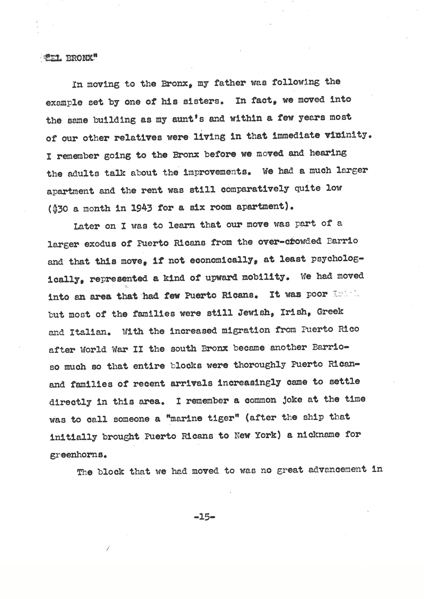

01 · EL BRONX · 1940s
The market street
Later on I was to learn that our move was part of a larger exodus of Puerto Ricans from the over-crowded Barrio and that this move, if not economically, at least psychologically, represented a kind of upward mobility. We had moved into an area that had few Puerto Ricans. It was poor but most of the families were still Jewish, Irish, Greek and Italian. As the area became more Puerto Rican, tropical fruits and vegetables began to dominate the scene.
Excerpted from “El Bronx,” manuscript, p. 15–17. Lightly shortened for this page.
Guiding question
What does Alfredo's memory help us see about neighborhood change, belonging, and food?
